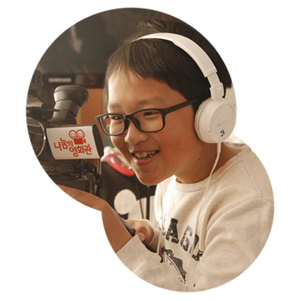
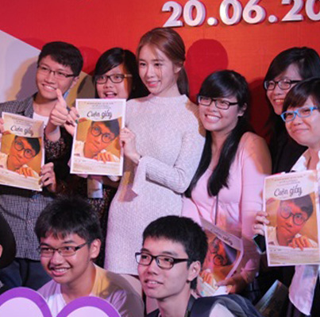
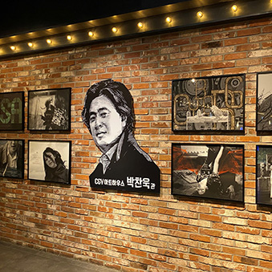
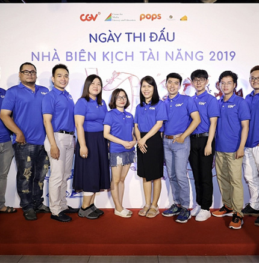
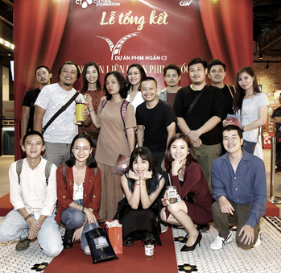
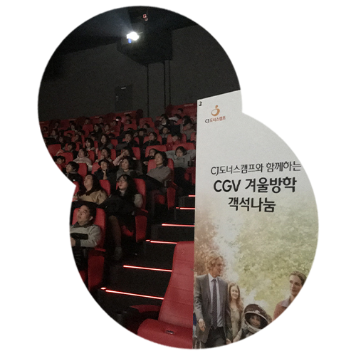
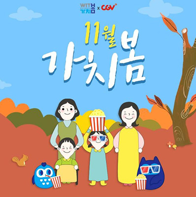
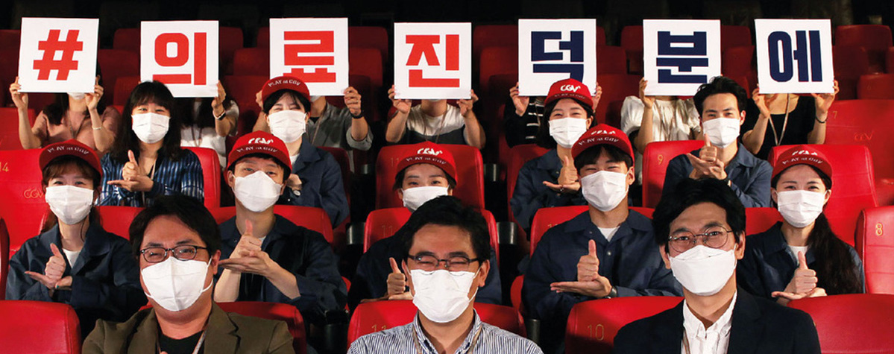

HOME > 지속가능경영 > 사회공헌
사회공헌

CGV에서 청소년들의 배움이 펼쳐집니다
-

- 두근두근 영화학교
-
영화 관람 전후 영화 속 직업 전문가의 특강을 진행,
청소년들의 진로 선택을 돕습니다. 또한, 영화와 관련된 역사, 사회문제 등 다양한 주제에 대한 교육을 제공하여 흥미롭게 여러 분야의 지식을
쌓을 수 있는 기회를 제공합니다.
- CGV는 지역 사회 및 이해관계자와 더불어 사는 사회를 만들고, 지속가능한 문화생태계를 조성하고자 합니다. 국내외 CGV가 지역과 상생하는 복합문화공간이 되도록 다양한 사업을 운영하며 사회적 가치 창출에 힘쓰고 있습니다.
-

- 토토의 작업실
- 국내 및 해외(중국, 미얀마 등)에서 청소년들이 시나리오 작성부터 촬영, 편집까지 영화 제작 전 단계에 참여하는 실습형 교육으로 각자의 꿈과 끼를 찾는 기회를 제공합니다.
CGV에서 젊은 영화인이 재능을 키우고 성장합니다
- 
- 
- 
- 베트남 시나리오 공모전
- 국내 및 해외(중국, 미얀마 등)에서 청소년들이 시나리오 작성부터 촬영, 편집까지 영화 제작 전 단계에 참여하는 실습형 교육으로 각자의 꿈과 끼를 찾는 기회를 제공합니다.
CGV에서 모두가 영화를 누립니다
-

- 객석나눔
- 문화소외계층을 전국 CGV로 초청하여 최신 영화 관람을 지원합니다. 특히 직영으로 운영되는 모든 CGV는 지역 내 복지기관과 1:1 결연을 맺고 지속적인 영화 관람 및 컬쳐플렉스 체험활동을 지원하고 있습니다. (2020년 8월 기준 총 14만여석 제공)
-

- 가치봄
-
2011년부터 시청각장애인을 위한 한글자막/화면해설 영화(베리어프리영화)
정기 상영을 시작했습니다. 2019년에는 영화진흥위원회, 한국농아인협회,
한국시각장애인협회 등과 공동브랜드 '가치봄'을 론칭하여
장애인 영화관람환경 개선을 위해 노력하고 있습니다.
(2020년 8월 기준 총 22만 여석 제공)
CGV에서 다양한 상생 프로젝트가 펼쳐집니다

-
- 극장 내 지역 상생 활동
-
소외계층의 자립을 위한 카페 운영,
지역소상공인들을 위한 플리마켓,
다양한 사회적 가치 전파 위한 NGO관 운영 등 다양한 상생 나눔 활동이 진행됩니다.
-
- 임직원 봉사활동
-
CGV 임직원들은 지역사회 내 도움이
필요한 곳에 정기적인 봉사활동을
진행함으로써 나눔을 실천하고 있습니다.
(2019년 ‘서울특별시장상’ 자원봉사 부분 수상)